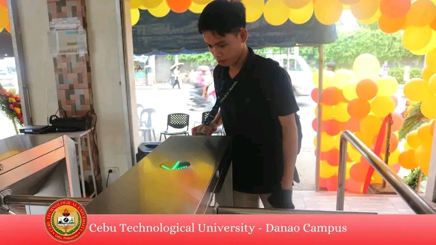

Published on: December 2,2024
The Cebu Technological University (CTU) Danao Campus is an institution committed to fostering academic excellence and innovation. To enhance safety, streamline access, and ensure operational efficiency, implementing an ID-based swipe gate system is a forward-thinking solution tailored to meet the campus's growing needs.
Overview of ID-Based Swipe Gates for Schools
Swipe gate systems are designed to manage and monitor the movement of individuals entering and exiting a facility.
For a dynamic academic environment like CTU Danao, such a system provides an automated, secure, and efficient way to regulate access for students, staff, and visitors.
Why CTU Danao Needs Swipe Gates
1. Enhanced Security: By ensuring only authorized individuals can enter or exit the campus, swipe gates help protect students, faculty, and campus assets.
2. Attendance Management: The swipe system can integrate with the school’s attendance monitoring software, making it easier to track student and staff attendance.
3. Crowd Control: During peak hours, the automated gates ensure smooth and organized movement, preventing congestion at entry and exit points.
Conclusion
By introducing ID-based swipe gates, CTU Danao can enhance its campus security, improve operational efficiency, and provide a safer environment for its students and staff. This initiative not only addresses current challenges but also positions the university as a leader in adopting smart, technology-driven solutions for education.
This transformation will reinforce CTU Danao’s reputation as a progressive institution ready to meet the demands of modern education and campus management.
Back to Articles